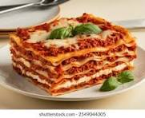

Home
Lasagna Recipe

Una lasaña casera, rica en capas de queso, carne y salsa, ideal para compartir en familia.
Ingredients:
- 12 lasagna noodles
- 1 lb ground beef
- 1 jar marinara sauce
- 15 oz ricotta cheese
- 2 cups shredded mozzarella cheese
- 1/4 cup chopped fresh basil
Instructions:
- Cook lasagna noodles according to package directions.
- Preheat oven to 375°F (190°C).
- In a large skillet, cook ground beef until browned. Drain excess fat.
- Add marinara sauce to the beef and simmer for 10 minutes.
- In a medium bowl, mix ricotta cheese with basil.
- Spread a thin layer of meat sauce in the bottom of a 9x13 inch baking dish.
- Layer noodles, ricotta mixture, and mozzarella cheese.
- Bake for 25 to 30 minutes until cheese is bubbly and golden brown.